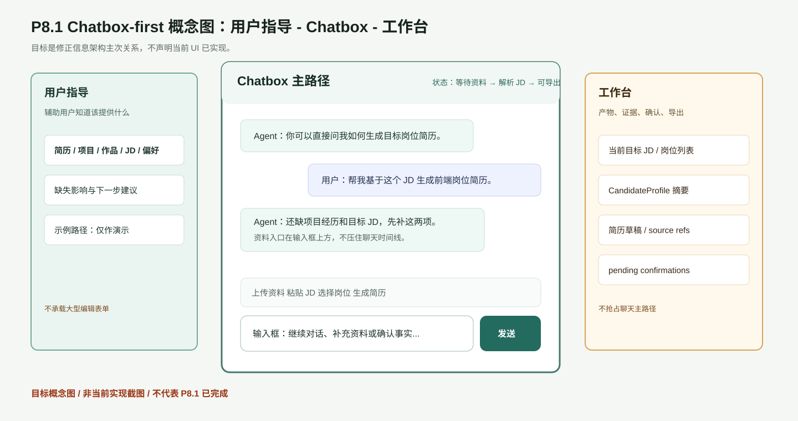

审查结论
当前理解已明确：P8 能力已经存在，但前端信息架构主次错误。P8.1 的核心不是增加更多按钮，而是把体验恢复为 用户指导 - Chatbox - 工作台，其中中央 Chatbox 是首屏第一优先路径。
当前状态边界：本报告用于指导实现和验收，不代表 P8.1 UI 已修复；目标概念截图不是当前实现截图。
概念图

docs/reports/evidence/p8_1_frontend_review/p8_1_concept_diagram.svg当前实际实现基线截图

当前真实基线 1440px：P8 workflow strip 位于聊天时间线之前
docs/reports/evidence/p8_1_frontend_review/baseline_current_1440.png
当前真实基线 1200px：三栏基线和中央任务区
docs/reports/evidence/p8_1_frontend_review/baseline_current_1200.png
当前真实基线 720px：窄屏下聊天与 P8 工作区关系
docs/reports/evidence/p8_1_frontend_review/baseline_current_720.png
当前真实基线 390px：移动端可达性和输入区
docs/reports/evidence/p8_1_frontend_review/baseline_current_390.png目标概念截图

目标概念 1440px：用户指导 - Chatbox - 工作台
docs/reports/evidence/p8_1_frontend_review/target_chatbox_first_1440.png
目标概念 720px：Chatbox 默认主视图，辅助区收敛
docs/reports/evidence/p8_1_frontend_review/target_chatbox_first_720.png
目标概念 390px：移动端优先显示 Chatbox 和输入区
docs/reports/evidence/p8_1_frontend_review/target_chatbox_first_390.png当前事实基线检查
| 事实 | 结果 |
|---|---|
| p8-workflow-strip 位于 timeline 之前 | True |
| DesktopContextPanel 存在 | True |
| MaterialIntakeWizard 存在 | True |
| JDIntakeCenter 存在 | True |
| JobTargetList 存在 | True |
| ResumeGenerationPlane 存在 | True |
| Workbench 存在 | True |
| composer quick actions 存在 | True |
当前截图与目标截图对比
| 审查点 | 当前基线 | P8.1 目标 | 验收判断 |
|---|---|---|---|
| 中央首屏主路径 | p8-workflow-strip 在 timeline 前，资料/JD/简历入口抢占首屏。 | 中央优先展示 Agent 状态、聊天时间线和输入框。 | 待实现 |
| 资料/JD 入口 | 资料向导、JD 导入、岗位列表、简历生成集中在中央大块区域。 | 入口紧贴输入框，或进入左侧指导/右侧工作台/轻弹层。 | 待实现 |
| 三栏职责 | 三栏存在，但中央职责混杂。 | 左侧指导、中央聊天、右侧产物确认。 | 待实现 |
| 移动端 | 需要继续以真实截图确认 Chatbox 是否默认主路径。 | 移动端默认显示 Chatbox，指导和工作台抽屉化。 | 待实现 |
用户操作 / 体验路线图
- 用户打开本地 Chatbox，首屏识别三栏：左侧“我该准备什么”、中央“聊天”、右侧“产物”。
- 用户可以直接在 Chatbox 提问，例如“帮我生成一版前端岗位简历”。
- Agent 在对话中解释缺少哪些资料，并把上传资料、粘贴 JD、选择岗位、生成简历入口放在输入框附近。
- 用户粘贴目标 JD；系统只保存文本、来源 URL、平台标签和备注，不抓取网页。
- 右侧工作台展示当前目标 JD、CandidateProfile、简历草稿、source refs、pending confirmations 和 export preflight。
- 用户继续多轮对话补充资料、确认事实，blocking 项处理后才能正式导出。
自动化开发指导
| 区域 | 需要做什么 | 禁止做什么 |
|---|---|---|
Conversation Plane | 将 timeline 和 composer 提升为中央首屏主体，保留紧凑 Agent 状态机。 | 继续把大型资料/JD/简历表单放在 timeline 前。 |
p8-workflow-strip | 拆为输入框工具、轻弹层、抽屉或左右辅助面板。 | 删除 P8 能力或让工具入口不可达。 |
DesktopContextPanel | 承载资料清单、缺失影响、示例路径和下一步建议。 | 承载大型编辑表单或替代聊天。 |
Workbench | 承载岗位、画像、简历、source refs、pending confirmations、export preflight。 | 抢占中央主路径或要求用户理解内部 artifact。 |
styles.css | 固定多视口主次：桌面三栏、平板/移动 Chatbox 默认优先。 | 出现按钮错位、文字重叠、输入框不可达。 |
端到端验收门槛
| 门槛 | 必须证据 | 打回条件 |
|---|---|---|
| Chatbox-first | 1200/1440/1920 首屏截图显示聊天时间线和输入框优先。 | workflow strip 或大表单仍压住聊天。 |
| 工具入口 | 上传资料、粘贴 JD、选择岗位、生成简历紧贴输入框或在辅助面板内。 | 入口分散、不可达、文字重叠。 |
| 工作台 | 右侧能看到岗位、画像、简历、source refs、待确认和导出检查。 | 右侧空白或抢占中央聊天。 |
| 移动端 | 720px/390px 真实截图证明默认 Chatbox 优先。 | 移动端默认进入资料表单或输入框不可达。 |
| 边界 | 报告明确未验证真实 provider、真实资料、招聘平台自动化、自动投递。 | 任何 false-green 结论。 |
AI 文生图审计
| 检测模式 | B-or-C / MODE B / C · 未启用 Garden。若宿主 Agent 自带图像工具（image_generation / dalle / mcp__*image* 等）→ MODE B：把 prompt 交给宿主出图。若宿主无图像工具 → MODE C：仅产出高质量 prompt 给用户。 |
|---|---|
| 是否使用 AI 文生图 | False |
| 决策 | 未使用 AI 文生图；采用可复现 HTML/SVG 目标概念图。 |
一致性与事实性检查
| 检查项 | 结果 | 证据 |
|---|---|---|
| 项目概念一致性 | 通过 | 目标图只表达 P8.1 文档定义的用户指导 - Chatbox - 工作台。 |
| 事实性错误 | 未发现 | 目标图带非当前实现水印，不声称平台接入、真实 provider 或真实资料通过。 |
| 实现截图混淆风险 | 已控制 | 报告将当前真实截图和目标概念截图分区展示。 |
命令证据与图片完整性
命令证据
| 检查 | 命令 | 状态 | 摘要 |
|---|---|---|---|
| gpt-image-2 mode check | node /home/administrator/.agents/skills/gpt-image-2/scripts/check-mode.js --json | passed | {
"mode": "B-or-C",
"recommendation": "host-or-advisor",
"garden_mode_enabled": false,
"has_api_key": false,
"base_url": "https://api.openai.com/v1",
"model": "gpt-image-2",
"env_flag_value": "(unset)",
"summary": "MODE B / C · 未启用 Garden。若宿主 Agent 自带图像工具（image_generation / dalle / mcp__*image* 等）→ MODE B：把 prompt 交给宿主出图。若宿主无图像工具 → MODE C：仅产出高质量 prompt 给用户。"
} |
| drawio XML parse | /usr/bin/python3 -c import xml.etree.ElementTree as ET; ET.parse('docs/active/jobpilot-stage-gap-and-acceptance.drawio'); print('drawio parse ok') | passed | drawio parse ok |
| headless Chrome screenshot capture | node scripts/browser_tools/browser-acceptance.mjs --start-chrome --scenario /mnt/c/workspace/interview_service/docs/reports/evidence/p8_1_frontend_review/p8_1_browser_scenario.json --output-dir /mnt/c/workspace/interview_service/docs/reports/evidence/p8_1_frontend_review --report /mnt/c/workspace/interview_service/docs/reports/evidence/p8_1_frontend_review/p8_1_browser_capture_report.html --port 9238 | passed | /mnt/c/workspace/interview_service/docs/reports/evidence/p8_1_frontend_review/p8_1_browser_capture_report.html |
| 报告图片与 false-green 自检 | internal report validation | passed | image_refs=8; missing=[]; forbidden=[] |
图片引用检查
| 文件 | 大小 | 状态 |
|---|---|---|
docs/reports/evidence/p8_1_frontend_review/p8_1_concept_diagram.svg | 5316 bytes | passed |
docs/reports/evidence/p8_1_frontend_review/baseline_current_1440.png | 191941 bytes | passed |
docs/reports/evidence/p8_1_frontend_review/baseline_current_1200.png | 178315 bytes | passed |
docs/reports/evidence/p8_1_frontend_review/baseline_current_720.png | 168865 bytes | passed |
docs/reports/evidence/p8_1_frontend_review/baseline_current_390.png | 167999 bytes | passed |
docs/reports/evidence/p8_1_frontend_review/target_chatbox_first_1440.png | 94796 bytes | passed |
docs/reports/evidence/p8_1_frontend_review/target_chatbox_first_720.png | 88296 bytes | passed |
docs/reports/evidence/p8_1_frontend_review/target_chatbox_first_390.png | 52069 bytes | passed |
未验证范围
- P8.1 UI 还没有实现，本报告只是审查与实现指导页。
- 目标概念截图不是当前实现截图，不能作为验收通过证据。
- 未调用真实 MiniMax、DeepSeek 或 OpenAI-compatible provider。
- 未使用用户真实个人资料。
- 未接入 BOSS、猎聘、拉勾等招聘平台，不自动沟通或自动投递。